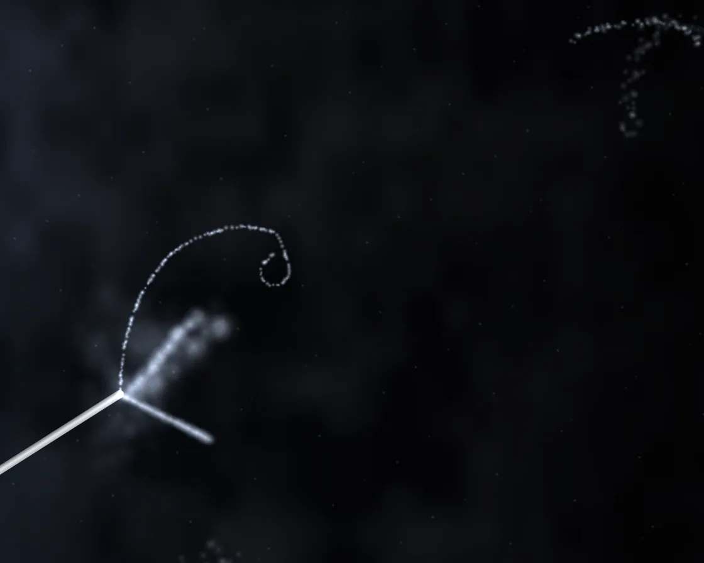

Cloud chamber
Cloud chamber is a Canvas effect: particle tracks drawn as droplet trails that swell, drift and fade. One plain JavaScript file with no dependencies; add it with npx motion-library add cloud-chamber.

Open it live, tune it and copy the code
What is Cloud chamber?
Droplet tracks appear in a misty chamber: straight alpha stubs, spiralling electrons and long muon lines.
How does Cloud chamber work?
Each track is a list of droplets that swell, drift and fade; beta electrons scatter and curl in the magnetic field, tightening as they slow.
How do I add Cloud chamber to my website?
- In your project folder, run
npx motion-library add cloud-chamber. It writesanimations/cloud-chamber.js. Needs Node 18 or newer. - Import it and call it with a container element that has a size:
import fx from './animations/cloud-chamber.js'; const stop = fx(document.querySelector('#hero')); - Call
stop()to clean up, for example when a component unmounts.
Every setting below is also a flag, so you can install it already tuned: npx motion-library add cloud-chamber --activity 3.
What settings can I tweak?
| Setting | Flag | Default | Range | Step |
|---|---|---|---|---|
| Activity | --activity | 1 | 0.2 to 3 | 0.1 |
| Magnetic field | --field | 1 | 0 to 2.5 | 0.05 |
| Mist | --mist | 1 | 0 to 2 | 0.05 |
Specifications
- Renderer
- Canvas 2D
- Category
- Flow & particles
- Dependencies
- None
- File size
- 7.8 KB, unminified
- Interactive
- No: it plays on its own
- Reduced motion
- Plays the same for everyone
- Licence
- MIT-0: use it anywhere, no credit needed
Source code
// Cloud chamber: radiation made visible. The air is supersaturated with alcohol vapour, so every charged particle
// that passes leaves a trail of droplets, lit from the side. A thoriated welding rod sends out alpha particles:
// short, fat, dead-straight tracks. Beta electrons are thin and wander, and in the magnet under the chamber they
// curl into tightening spirals as they lose energy. Every few seconds a cosmic-ray muon cuts clean across the whole
// chamber, sometimes knocking loose a little electron of its own (a delta ray). Trails fade, swell and drift.
const PARAMS = { activity: 1, field: 1, mist: 1 };
export default function (stage) {
const canvas = document.createElement('canvas');
canvas.style.cssText = 'position:absolute;inset:0;width:100%;height:100%;display:block;background:#020304';
stage.append(canvas);
const ctx = canvas.getContext('2d');
let W = 1, H = 1, S = 1;
const resize = () => { const d = Math.min(devicePixelRatio, 2); W = stage.clientWidth || 1; H = stage.clientHeight || 1; S = Math.min(W, H); canvas.width = Math.max(1, (W * d) | 0); canvas.height = Math.max(1, (H * d) | 0); ctx.setTransform(d, 0, 0, d, 0, 0); };
const ro = new ResizeObserver(resize); ro.observe(stage); resize();
// one soft droplet, drawn once and stamped thousands of times
const dot = document.createElement('canvas'); dot.width = dot.height = 32;
{ const g = dot.getContext('2d'), r = g.createRadialGradient(16, 16, 0, 16, 16, 16); r.addColorStop(0, 'rgba(235,242,255,1)'); r.addColorStop(0.35, 'rgba(200,215,240,.55)'); r.addColorStop(1, 'rgba(160,180,220,0)'); g.fillStyle = r; g.fillRect(0, 0, 32, 32); }
// the mist: a little noise canvas that drifts, scaled up soft
const FW = 128, FH = 80, fog = document.createElement('canvas'); fog.width = FW; fog.height = FH; const fg = fog.getContext('2d'), fimg = fg.createImageData(FW, FH);
const hash = (x, y) => { const s = Math.sin(x * 127.1 + y * 311.7) * 43758.5453; return s - Math.floor(s); };
const vn = (x, y) => { const xi = Math.floor(x), yi = Math.floor(y), u = x - xi, v = y - yi, a = hash(xi, yi), b = hash(xi + 1, yi), c = hash(xi, yi + 1), d = hash(xi + 1, yi + 1), su = u * u * (3 - 2 * u), sv = v * v * (3 - 2 * v); return a + (b - a) * su + (c - a) * sv + (a - b - c + d) * su * sv; };
const tracks = [], rand = (a, b) => a + Math.random() * (b - a);
const source = () => ({ x: W * 0.17, y: H * 0.7 });
// a track is a list of droplets, each with its own spread so the trail diffuses as it ages
function addTrack(kind, x, y, ang, len) {
const drops = [], B = 0.9 * PARAMS.field;
let px = x, py = y, a = ang, s = 0;
const step = kind === 'alpha' ? 1.1 : kind === 'muon' ? 2.2 : 1.6, sign = Math.random() < 0.9 ? 1 : -1; // the odd positron curls the other way
while (s < len) {
const left = 1 - s / len;
if (kind === 'beta' || kind === 'delta') {
a += sign * B * step / (S * 0.32 * Math.pow(Math.max(0.05, left), 0.8)); // tighter as it slows: a spiral
a += (Math.random() - 0.5) * (0.05 + 0.5 * (1 - left) ** 2); // and multiple scattering
} else if (kind === 'alpha') { if (left < 0.12) a += (Math.random() - 0.5) * 0.12; }
px += Math.cos(a) * step; py += Math.sin(a) * step; s += step;
if (px < -20 || px > W + 20 || py < -20 || py > H + 20) break;
const n = kind === 'alpha' ? 1 : kind === 'muon' ? (Math.random() < 0.6 ? 1 : 0) : (Math.random() < 0.75 ? 1 : 0);
for (let k = 0; k < n; k++) drops.push({ x: px + rand(-0.6, 0.6), y: py + rand(-0.6, 0.6), dx: rand(-1, 1), dy: rand(-1, 1), r: kind === 'alpha' ? rand(1.1, 1.9) * (1 + (1 - left) * 0.6) : rand(0.6, 1.1) });
if (kind === 'muon' && Math.random() < 0.0016) addTrack('delta', px, py, a + rand(-1.6, 1.6), rand(0.04, 0.1) * S);
}
tracks.push({ kind, drops, age: 0, life: kind === 'alpha' ? 2.8 : kind === 'muon' ? 3 : 2.5, bright: kind === 'alpha' ? 0.2 : kind === 'muon' ? 0.5 : 0.62 });
}
const emit = kind => {
if (kind === 'alpha') { const s = source(); addTrack('alpha', s.x + rand(-2, 2), s.y + rand(-2, 2), rand(-1.9, 0.7), rand(0.16, 0.28) * S); }
else if (kind === 'beta') { const fromRod = Math.random() < 0.5, s = source(); addTrack('beta', fromRod ? s.x : rand(0, W), fromRod ? s.y : rand(0, H), rand(0, 6.283), rand(0.2, 0.75) * S); }
else { // a muon: in at one edge, straight out the other
const a = rand(0, 6.283), cx = rand(W * 0.2, W * 0.8), cy = rand(H * 0.2, H * 0.8), R = Math.hypot(W, H);
addTrack('muon', cx - Math.cos(a) * R / 2, cy - Math.sin(a) * R / 2, a, R);
}
};
const rates = { alpha: 2.2, beta: 2.2, muon: 0.45 };
const acc = { alpha: 0.8, beta: 0.3, muon: 0.85 };
// a little backlog so the chamber is never empty when it first appears
for (let i = 0; i < 3; i++) emit('alpha'); emit('beta'); emit('muon');
tracks.forEach((t, i) => { t.age = 0.15 + i * 0.25; });
let raf, last = performance.now(), time = 0;
function frame(now) {
const dt = Math.min(0.05, (now - last) / 1000); last = now; time += dt;
for (const k in rates) { acc[k] += dt * rates[k] * PARAMS.activity; while (acc[k] > 1) { acc[k] -= 1 + Math.random() * 0.6; emit(k); } }
// the chamber floor, lit by a lamp off the left edge
ctx.globalCompositeOperation = 'source-over';
const bg = ctx.createLinearGradient(0, 0, W, 0); bg.addColorStop(0, '#0b0f15'); bg.addColorStop(0.35, '#040507'); bg.addColorStop(1, '#020203');
ctx.fillStyle = bg; ctx.fillRect(0, 0, W, H);
// mist drifting across the light
for (let y = 0; y < FH; y++) for (let x = 0; x < FW; x++) {
const n = vn(x * 0.07 + time * 0.25, y * 0.085 - time * 0.08) * 0.6 + vn(x * 0.19 - time * 0.4, y * 0.19 + time * 0.1) * 0.4, i = (y * FW + x) * 4;
const v = Math.max(0, n - 0.3) * 55 * PARAMS.mist * (1.2 - x / FW);
fimg.data[i] = 170; fimg.data[i + 1] = 185; fimg.data[i + 2] = 215; fimg.data[i + 3] = v;
}
fg.putImageData(fimg, 0, 0); ctx.imageSmoothingEnabled = true; ctx.drawImage(fog, 0, 0, W, H);
// the source: a grey rod reaching in from the corner
const s = source();
ctx.save(); ctx.translate(s.x, s.y); ctx.rotate(Math.PI * 0.82);
const rg = ctx.createLinearGradient(0, -4, 0, 4); rg.addColorStop(0, '#9aa0a8'); rg.addColorStop(0.5, '#e4e7ea'); rg.addColorStop(1, '#4a4e55');
ctx.fillStyle = rg; ctx.fillRect(0, -3.2, S * 0.5, 6.4); ctx.beginPath(); ctx.arc(0, 0, 3.2, Math.PI / 2, -Math.PI / 2); ctx.fill(); ctx.restore();
// the tracks, and a fine drizzle of droplets falling out of the sensitive layer
ctx.globalCompositeOperation = 'lighter';
for (let i = 0; i < 140; i++) {
const h = (i * 0.6180339 + Math.floor(time * 0.7 + i * 0.37) * 0.17) % 1, x = h * W, y = ((i * 0.7548776) % 1) * H + ((time * 0.7 + i * 0.37) % 1) * 8;
ctx.globalAlpha = 0.18 * Math.sin(((time * 0.7 + i * 0.37) % 1) * Math.PI); ctx.drawImage(dot, x - 1.5, y - 1.5, 3, 3);
}
for (let i = tracks.length - 1; i >= 0; i--) {
const t = tracks[i]; t.age += dt;
if (t.age > t.life) { tracks.splice(i, 1); continue; }
const a = t.age, k = Math.min(1, a / 0.07) * Math.exp(-a / (t.life * 0.45)) * t.bright, swell = 1 + a * 0.9, spread = a * a * 4;
const driftX = Math.sin(time * 0.3) * a * 3, driftY = a * a * 5; // convection, and droplets starting to fall
for (const d of t.drops) {
const x = d.x + d.dx * spread + driftX, y = d.y + d.dy * spread + driftY, r = d.r * swell * 2;
ctx.globalAlpha = Math.min(1, k * (0.75 + 0.5 * (1 - x / W))); // nearer the lamp, brighter
ctx.drawImage(dot, x - r, y - r, r * 2, r * 2);
}
}
ctx.globalAlpha = 1; ctx.globalCompositeOperation = 'source-over';
raf = requestAnimationFrame(frame);
}
raf = requestAnimationFrame(frame);
return () => { cancelAnimationFrame(raf); ro.disconnect(); canvas.remove(); };
}